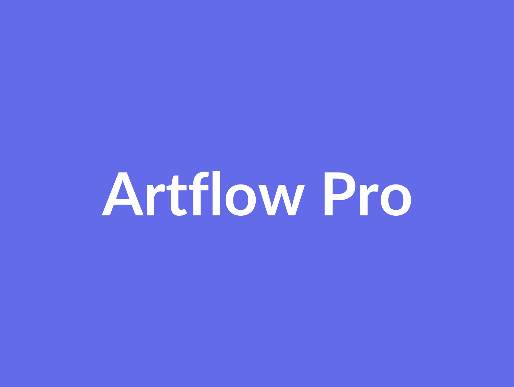

Discover & define
Understand your goals, users and priorities. Agree on scope and the first useful release.
SpheresX is a software development company in Lahore, Pakistan. We build websites, Flutter apps for Android and iOS, and AI-powered products for startups and growing businesses.
One technology partner for the whole product journey — from the first sketch to launch and the next iteration.
Build Android and iOS experiences with Flutter, designed around real user journeys.
Explore mobile application development ↗02 / EXPERTISEFrom company websites to customer portals and dashboards, create an experience that works across screens.
Explore web development ↗03 / EXPERTISEIntegrate AI into a specific customer workflow, with a clear purpose and practical product boundaries.
Explore ai product development ↗04 / EXPERTISEDefine the experience before building it, so the product feels focused and easy to navigate.
Explore ui / ux design ↗05 / EXPERTISEConnect the data, business logic and third-party services your application needs.
Explore backend & integrations ↗06 / EXPERTISEPlan product improvements and technical maintenance around the software you already have.
Explore maintenance & support ↗Selected projects from Muhammad Usama’s portfolio, spanning mobile apps and business platforms.

Artflow Pro is a feature-rich platform designed for artists and galleries, supporting role-based access and monetization via tiered subscrip
View project details ↗
I developed and launched the Data Mirroring TV Cast App using Flutter & Dart for both Android and iOS — now LIVE on the App Store and Google
View project details ↗Worldwide TV: Remote Control — a mobile TV remote experience.
View project details ↗SpheresX is a software development company based in Lahore, Pakistan. We partner with startups and businesses to turn ideas into practical digital products.
Our approach connects design, engineering and product thinking. We focus on clear communication, thoughtful decisions and software that supports your next stage of growth.
You know what’s happening, what comes next and how each decision moves your product forward.
Understand your goals, users and priorities. Agree on scope and the first useful release.
Shape the user experience and review a prototype before committing to development.
Develop in focused milestones, share progress and test the important user journeys.
Prepare the release, support the handover and plan improvements using real feedback.
Yes. We can start with discovery, define your MVP and outline the screens, features and technical approach needed for a first release.
We use Flutter to develop cross-platform mobile applications. The release plan includes platform-specific requirements and store submission preparation.
Pricing depends on scope, integrations and complexity. Share your requirements so we can discuss a suitable approach, milestones and estimate.
We can discuss your current codebase, product challenges and priorities, then define a practical scope for fixes, features or redesign.
Maintenance, release support and further improvements can be included in an agreed support plan. We define those arrangements with you before work begins.
Client and manager recommendations about Muhammad Usama, as published in his portfolio.
Recognizes Usama’s technical ability, commitment and contribution to Flutter/Firebase projects and team development.
Highlights a positive mobile development engagement, dependable delivery and effective communication throughout the project.
Recommends Usama for resolving difficult Flutter issues, communicating clearly and completing the agreed work on schedule.
Practical guides to help you scope, build and maintain a useful digital product.
A useful brief explains what is happening today and what should become easier. Instead of asking for an app with login, chat and payments, describe who will use it and the pro
Read article ↗A product can be ready for users while its owner still lacks the information needed to operate it. Agree on handover deliverables during project planning and review them befor
Read article ↗Launching an application is the beginning of operating it. Someone needs to review user reports, make product decisions and coordinate technical work. That person does not nee
Read article ↗Tell us what you want to build. We’ll help you work out the next step.
Start a project ↗